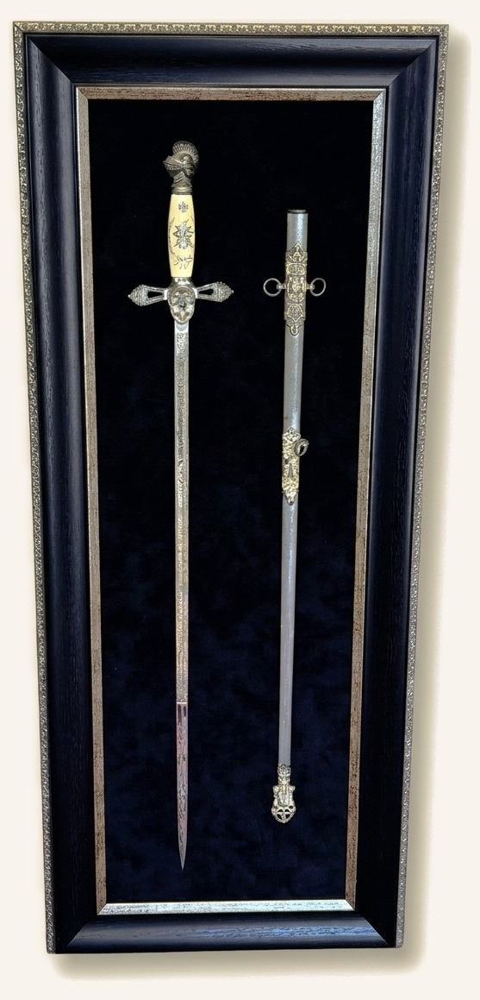

The Chapman Collection
Persian Carpets
|
Fine Furniture
|
Artworks
|
Accessories
|
Autumn warmth and Old World peculiars
|
|
As late October settles over Rancho Santa Fe and the evenings draw in before Saturday's festivities, our thoughts naturally turn to pieces with a little mystery, history and Old World warmth.
This week we're delighted to share four newly arrived Old World cabinets crafted from centuries-old antique doors, alongside a custom-framed Knight Templar sword, a monumental architectural mirror, a luminous Persian silk runner and a few intriguing gallery curiosities.
|
Old World Antique-Door Cabinets
Historically, heavy iron straps, raised studs and carved timber borders were used to reinforce grand wooden doorways. Repurposed into custom shelved cabinets, these antique doors bring remarkable architectural character and practical storage into the home.
|
Old World Metal-Clad Door Cabinet
Featuring antique doors with hand-beaten metal detailing, rows of raised studs, traditional ring pulls and a shelved wood interior (59½″ H × 32½″ W × 16¼″ D).
$2,600Sale $2,400
|
|
Carved Antique-Door and Strap Cabinet
Warm brown antique doors with carved borders, hand-beaten metal straps and a rustic central latch, opening to practical interior shelving (61½″ H × 34½″ W × 15¼″ D).
$2,600Sale $2,400
|
|
Old World Pale Blue Patina Cabinet
An impressive architectural cabinet showcasing antique panelled doors with a weathered pale blue finish, iron hardware and generous shelving (88½″ H × 50″ W × 29½″ D).
$3,450Sale $2,800
|
|
Red-Patina Carved Door Cabinet
Crafted with heavily carved antique doors bearing warm red patina, iron ring pulls and deep interior storage for a dining room or great room (88½″ H × 50″ W × 29″ D).
$3,450Sale $2,450
|
|
Chivalric History for the Study
|

|
Collector's Shadowbox Presentation
A striking decorative Knight Templar sword and matching scabbard, presented side by side in a custom dark shadowbox frame with bronze inner detailing.
With its helmeted pommel, decorated crossguard and historic symbolism, it makes an unforgettable focal point for a study, library or private office (49″ H × 29″ W).
Regular $1,950Sale $1,450
View Sword and Scabbard →
|
|
Architectural Scale and Luminous Silk
For a grand entrance hall, gallery corridor or living room, this monumental hand-carved architectural mirror and nearly ten-foot Persian silk Qum runner bring extraordinary presence and texture.
|
Old World Peculiars and Fine Curiosities
And for a smaller touch of intrigue, these inlaid, hand-painted and giltwood treasures offer wonderful detail and craftsmanship for a salon, console or dressing table.
|
Mother-of-Pearl and Bone Inlaid Chest
Richly inlaid with geometric mother-of-pearl and bone, opening to a red velvet interior and four small drawers on a custom stand (28½″ H × 32½″ W × 21″ D).
$2,800Sale $1,950
|
|
Pink Sèvres Porcelain Curiosity Chest
Hexagonal porcelain casket with a hand-painted pastoral lid, floral reserves, gilt Rococo scrollwork and hinged bronze mounts (4¾″ H × 7¾″ W × 7¾″ D).
$1,950Sale $1,450
|
|
Pair of Italian Gilt Gesso Wall Shelves
Sculptural antique Italian wall brackets with pierced acanthus scroll carving, shaped tops and a warm, time-softened gilt finish (8½″ H × 8″ W each).
$895Sale $495
|
|
|
We are open seven days a week in the heart of Rancho Santa Fe (Sundays by appointment), or simply reply to this note and let us know what you're looking for. We would be delighted to share additional photos or help you find just the right piece for your home or office.
Hope to see you soon!
Warmly,
Melissa Chapman
|
|